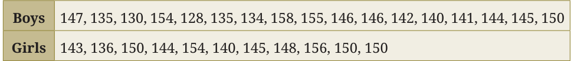
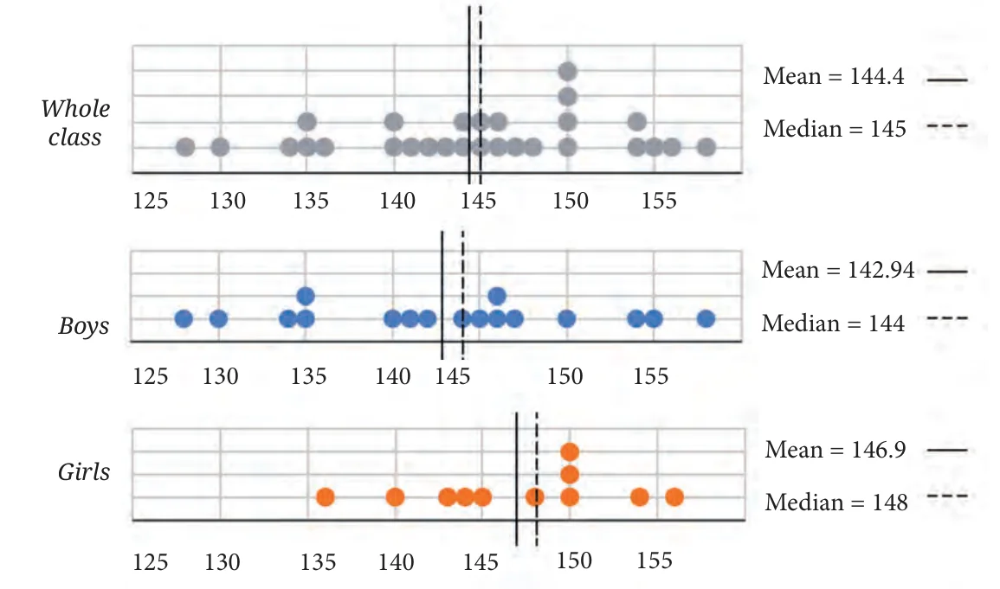
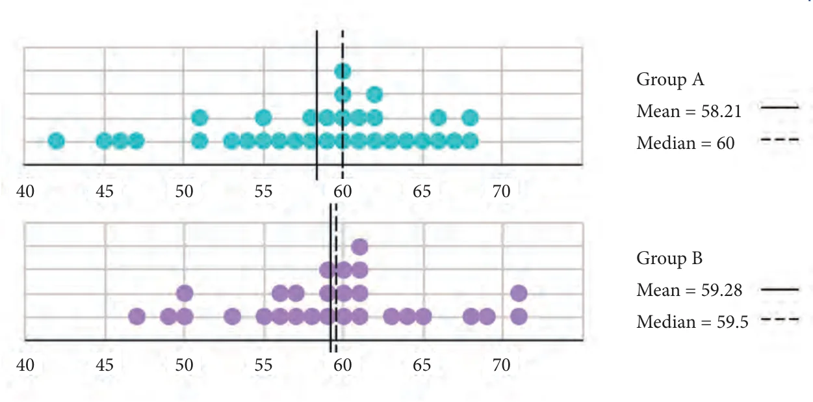
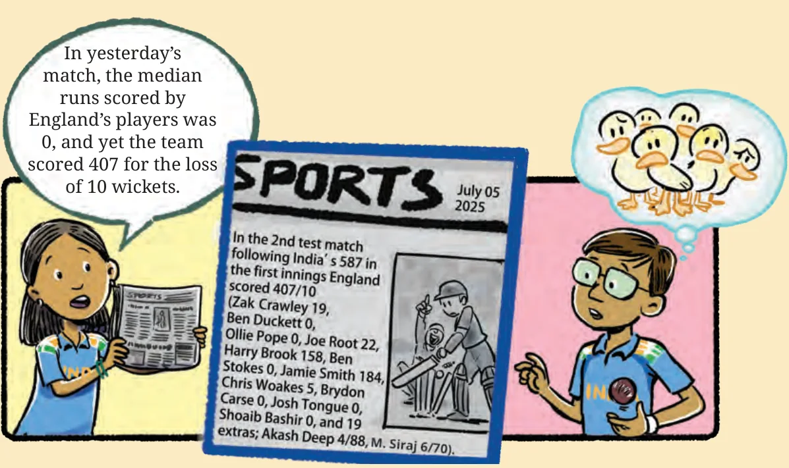

As we have just seen, the mean and the median can give different perspectives on the data. As part of analysing data, it can also be valuable to look at the variability in the given data, i.e., its extremes (minimum and maximum values).
How Tall is Your Class?
Suppose you are asked the question, "How tall is your class?" What would you say? The table below shows the heights of students in a Grade 5 class in centimeters.

We can visualise the data using a dot plot, identify the ends and patterns, and look at the variability. We can also find the measures of central tendency. The dot plot for the whole class, followed by the dot plots for boys and girls, respectively, are shown. The mean and the median are also shown for each collection.

What can we infer from the dot plots and the central tendency measures? The following points can help answer the question of how tall the class is.
- The boys’ heights are more spread out and are between 128 and 158. The girls’ heights lie between 136 and 156. Both the tallest and shortest in the class are boys.
- Yet, the boys’ average height is less than the whole class average, and also less than the girls’ average height. We can say girls are taller than boys in this class. Of course, this doesn’t mean every girl is taller than every boy!
- For boys’ heights, mean < median \((142.94 < 144)\) indicating a small influence of values on the lower side. For girls’ heights too, mean < median \((146.9 < 148)\) indicating a small influence of values on the lower side.
How many students are taller than the class’ average height?
How many boys are taller than the class’ average height?
How long is a minute?
Two groups of children were asked to estimate the length of 1 minute. They start by closing their eyes and then open when they think 1 minute has passed. Of course, they are not supposed to count while their eyes are closed. The dot plots below show after how many seconds the children opened their eyes. Discuss how well both the groups fared at this activity. Describe and compare the variability in data and their central tendency.

Zero Median Runs Scored!
In a cricket match, can a team’s median runs scored by a player be 0 but the team’s total score be 407/10?

Accounting for the extras, the average runs scored by a player in this innings is \((407 - 19) \div 11 = 35.27\).
Zero vs. No value
Suppose a player scores 57, 13, 0, 84, —, 51, 27 in a series. Notice that the player played Match 3 and scored 0 runs whereas the player did not play Match 5. So, we consider the total number of matches to be 6 and not 7. We calculate their average runs scored per match as
\((57 + 13 + 0 + 84 + 51 + 27) \div 6\).
Sita has a mango tree in her backyard. The number of mangoes the tree gave every month over the last year, from January to December, is 0, 0, 8, 24, 41, 16, 5, 0, 0, 0, 0, 0 respectively. If we want to find the mean or median number of mangoes per month, it would be appropriate to consider only the (summer) months when mangoes are expected to grow.
A Mean Foot
In the early 1500s in Europe, the basic unit of land measurement was the rod, defined as 16 feet long. At that time, a foot meant the length of a human foot! But foot sizes vary, so whose foot could they measure? To solve this, 16 adult males were asked to stand in a line, toe to heel, and the length of that line was considered the 16-foot rod. After the rod was determined, it was split into 16 equal sections, each representing the measure of a single foot. In essence, this was the arithmetic mean of the 16 individual feet, even though the term ‘mean’ was not mentioned anywhere.